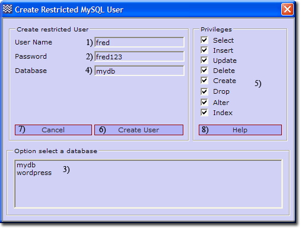

MySQL Create Restricted User
MySQL privileges allow each of the users to access and utilize only the areas they need to perform their tasks. This prevents a user from accidentally accessing an area where he or she should not have access this adds to the security of the MySQL server.
When you connect to a MySQL server, the host from which you connect and the user name you specify determines your identity. With this information, the server then grants privileges based upon this identity. This page focuses on creating a user with restricted privileges.
There are three methods for creating a restricted user; you can use a command window, phpMyAdmin or UniController. UniController provides a convenient menu option described bellow. To use this option ensure the MySQL server is running otherwise a warning message is produced.
Create Restricted MySQL User using UniController
Server Configuration > MySQL > Create Restricted MySQL User
Note: Cancel (7) clears both the selected database and user input. |
 |
Create Restricted MySQL User using phpMyAdmin
Start UniController and start both servers, then click phpMyAmin button. To create a restricted user, proceed as follows:
Note: Assume the user to create is mike123 and password pass123. The database wordpress that the user will be assigned has aleady been created.
Open Add new user page
|
When first started the phpMyAdmin home page is displayed; you can always return to this page by clicking the home icon (1)
|

|
Create new user
|
Creating a new user requires only the login information; the other fields are not required. We will assign this user to a database and set appropriate privileges as a second step. From new user page:
|

|
Assign user to a database
The new user created has now been added to the Privileges User overview page. This new entry allows a user to be assigned to a database as follows:
|
After creating a new use you will be at the privileges page.
|

|
|
A new page opens displaying privileges.
|

|
|
This directs you to the Database-specific privileges section
|

|
Create Restricted MySQL User using command window
Creating a user with restricted privileges and assigning that user to an existing database can also be performed using a single SQL line.
Example user
User name to create: fred123
User password: fredpass
Existing database: wordpress
Click MySQL console, which opens a command window. Use the MySQL Client utility from here to create our example user with restricted privileges as follows:
C:\UniServer\usr\local\mysql\bin>mysql -h127.0.0.1 -uroot -proot Welcome to the MySQL monitor. Commands end with ; or \g. Your MySQL connection id is 96 Server version: 5.5.20 MySQL Community Server (GPL) Copyright (c) 2000, 2011, Oracle and/or its affiliates. All rights reserved. Oracle is a registered trademark of Oracle Corporation and/or its affiliates. Other names may be trademarks of their respective owners. Type 'help;' or '\h' for help. Type '\c' to clear the current input statement. mysql> GRANT SELECT, INSERT, UPDATE, DELETE ON wordpress.* TO 'fred123'@'127.0.0.1' IDENTIFIED BY 'fredpass'; Query OK, 0 rows affected (0.02 sec) mysql> exit Bye C:\UniServer\usr\local\mysql\bin> |
Note: If you have changed the MySQL root password, remember to substitute (-proot) root with your password in the above.
Delete Restricted MySQL User using command window
Delete a user (example fred123) with restricted privileges as follows:
Click MySQL console which opens a command window. Use the MySQL Client utility from here to delete our example user fred123:
|
Enter the following in a command window:
|
C:\UniServer\usr\local\mysql\bin>mysql -h127.0.0.1 -uroot -proot Welcome to the MySQL monitor. Commands end with ; or \g. Your MySQL connection id is 109 Server version: 5.5.20 MySQL Community Server (GPL) Copyright (c) 2000, 2011, Oracle and/or its affiliates. All rights reserved. Oracle is a registered trademark of Oracle Corporation and/or its affiliates. Other names may be trademarks of their respective owners. Type 'help;' or '\h' for help. Type '\c' to clear the current input statement. mysql> DROP USER 'fred123'@'127.0.0.1'; Query OK, 0 rows affected (0.00 sec) mysql> exit Bye C:\UniServer\usr\local\mysql\bin> |
Note: If you have changed the MySQL root password, remember to substitute (-proot) root with your password in the above.
Related topics
MySQL Console
How to run a standard command window
MySQL console command window short cut